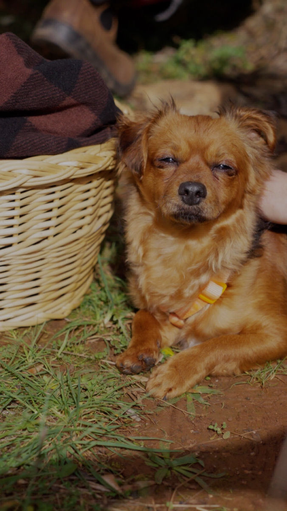

Looking for a Lisbon videographer? I'm Katy a freelance videographer and together with Eugene, we run Munjiri Videos. We often work in Lisbon and know the city well, capturing stories that feel real and look great, whether it’s a brand promo, an unforgettable event, or a documentary. We bring creativity, care, and solid production skills to every project, making sure your story shines in one of the most vibrant cities around. You can check out an overview of the videos we've made below.
Here’s a look at what we do:
Event Videography in Lisbon
From lively festivals to intimate gatherings, we capture events in a way that feels true to the moment. We aim to reflect Lisbon’s unique vibe and energy in every event video, so your memories come back to life every time you watch.
Brand Videos
We help both local and international brands tell their stories through video. Whether you're launching something new or building your presence, we work with you to create videos that reflect who you are with Lisbon’s charm adding something extra to your message.
Social Media & Digital Content
Need eye-catching content for Instagram, your website, or a campaign? We make short-form videos that are scroll-stopping, creative, and tailored to today’s platforms.


Getting to Know You & Your Goals
Every project starts with a conversation. We’ll set up a call to learn about you, your goals, your audience, and what a successful video looks like to you. The better we understand your story, the better we can help you tell it.
Ideas & Planning
Once we’re on the same page, we’ll start bouncing around ideas and figuring out the creative direction together. We’ll also handle the practical stuff, like picking great filming spots, sorting out schedules, and making sure everything’s set to run smoothly.
Filming & Bringing It to Life
Time to bring it all to life! We keep things professional but relaxed while filming, creating space for real moments to shine. Whether we’re filming in the heart of Lisbon or tucked-away corners, we focus on capturing visuals that feel genuine and compelling.
Editing & Fine-Tuning
After the shoot, we head into the edit with fresh eyes and attention to detail. We fine-tune the pacing, color, sound, and flow to shape your story into a finished video that feels just right.
Final Delivery & How to Make the Most of It
You’ll get your video in the formats you need, ready for social media, events, or wherever it’s going. We’ll also share tips on how to get the most out of it and help it reach the right people.


Praça do Comércio
Right by the river and full of charm, this iconic square mixes grand architecture with busy city vibes. It’s great if you’re after that classic Lisbon look.
Belém Tower
A piece of history right on the water. This landmark gives your video a cinematic feel and a nod to Portugal’s maritime past.
Alfama
Winding streets, colorful buildings, Alfama is full of character. It’s perfect for videos that want to tap into Lisbon’s culture.
Parque das Nações
Modern, sleek, and right by the river, this area is ideal for corporate shoots, brand videos, or anything with a more contemporary edge.
Praia do Guincho
Just outside the city near Cascais, this wild, windswept beach has serious drama. It’s a top pick for nature-focused or outdoor lifestyle shoots.
LX Factory
This old industrial area turned creative hotspot is packed with cool cafes, street art, and a trendy vibe. Great for artsy, urban-style videos.
Miradouro de São Pedro de Alcântara
A classic Lisbon lookout with sweeping views across the city, perfect for adding a bit of magic or romance to your shots.
Sintra’s Pena Palace
A bit outside Lisbon but totally worth it. This colorful castle looks like something out of a fairytale and is great for dreamy, whimsical, or visually rich shoots.

"Wow! We have a video. Thank you Katy & Eugene of Munjiri Videos, working with you two was just about the easiest collaborative process I could have ever imagined. You were incredibly relaxed (especially for being new parents) and professional. I look forward to continuing to work with Munjiri Videos as the school continues to grow."
Olivia Fite, Collective Wonder Herb School
“Working with Katy from Munjiri Videos has been a great experience from start to finish. She understood what I was looking for straight away, and guided me (as someone new to commissioning video) content through deciding what to include and creating a script, and made me feel as relaxed as possible during the filming. It was such a pleasure working with her, and the results are fantastic- just what I was looking for. I wouldn’t hesitate to hire Munjiri Videos again, and really hope to work with Katy in the future.”
Flora Collingwood-Norris, Collingwood-Norris


Ready to create an impactful video in Lisbon? At Munjiri Videos, we make storytelling simple, authentic, and beautiful. Contact us today, katy@munjiri.com

Brand Video Production
Social Media Video Production
Nature Video Production
Creative Video Productions
Charity Video Production
Drone Videographer
Event Video Production
Product Video Production
Travel Video Production
Learn Video Making
Video Storytelling
Video Making Tips
Video Marketing & Social Media Strategies
Nature Stories
Behind the Scenes
Client Stories
Locations & Travel
Location
Based in Portugal and South Africa, offering video production services worldwide.
Email: katy@munjiri.com
Get updates and free resources.